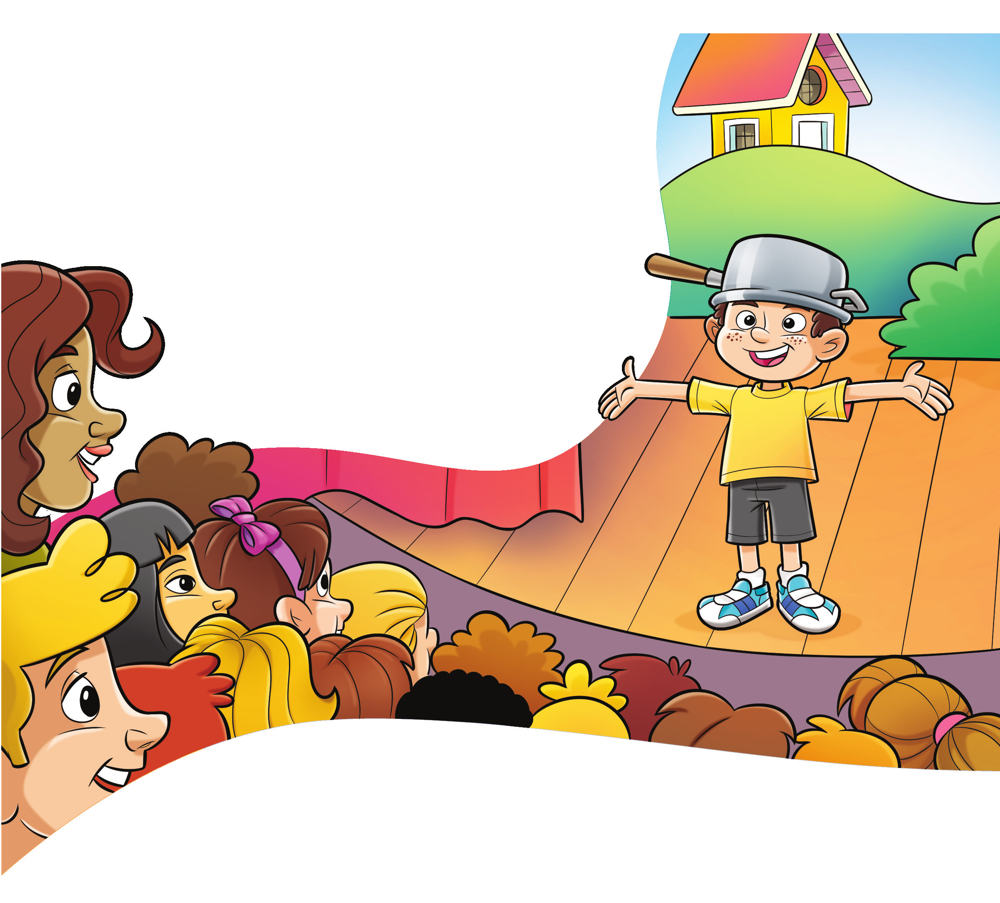
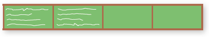
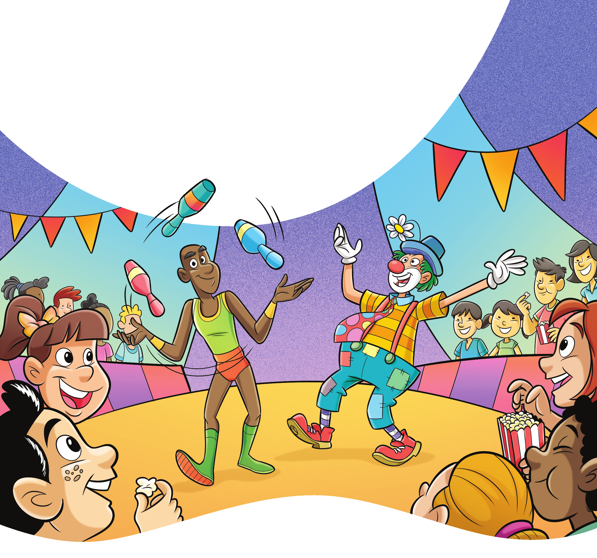
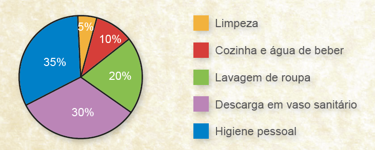
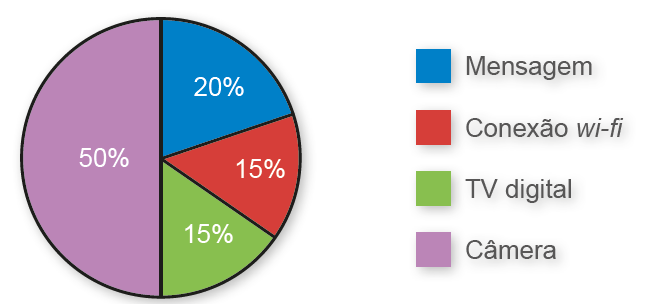
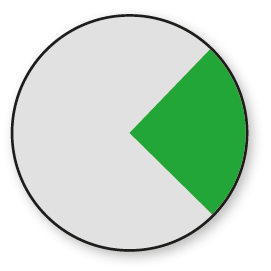
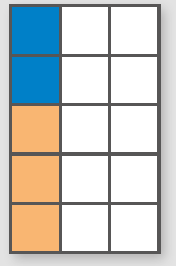
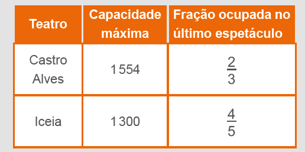

Neste capítulo, pode-se aliar o conceito de porcentagem com a construção de gráfico de barras. Estimule os alunos a construir gráfico de barras a partir de uma pesquisa desenvolvida por eles, representando a porcentagem em vez de quantidades.
Inicialmente, pode-se trabalhar coletivamente com eles um exemplo como este:
► Em uma turma com 40 alunos, realizou-se uma pesquisa para saber a preferência deles sobre alguns esportes. As informações estão representadas na tabela abaixo.
Com base nos dados da pesquisa, explore com os alunos a porcentagem que representa cada uma das preferências, o que pode ser feito com o auxílio de uma calculadora.
Nesse momento, mostre aos alunos que a fração 12/40 representa a quantidade de alunos que preferem vôlei. Relembre que essa fração pode ser simplificada, ou seja, 12/40 = 3/10, que representa 30%.
Em seguida, oriente-os a realizar o cálculo da porcentagem para as demais preferências e a anotar os dados em uma tabela.
CAPÍTULO 3 - Porcentagem
Significado da expressão: por cento
Para a festa de fim de ano, a turma de Larissa ensaiou a peça infantil O Menino Maluquinho para apresentar aos demais colegas. No dia da apresentação, os alunos reuniram-se no teatro da escola para assistir à peça.
Nesse dia, assistiram à peça 100 crianças, das quais 60 eram meninas e, 40 eram meninos.
Representando, na forma de fração, a quantidade de meninas, temos:
60/100
Significa que havia 60 meninas entre as 100 crianças, ou ainda, podemos dizer que 60% das crianças eram meninas.
Representando, na forma de fração, a quantidade de meninos, temos:
40/100
Significa que havia 40 meninos entre as 100 crianças, ou seja, 40% das crianças eram meninos.
As frações que representam a quantidade de meninas e meninos em relação ao total podem ser representadas por uma porcentagem.
193
Após o cálculo das porcentagens, oriente-os a construir um gráfico representando os valores obtidos. Nesse caso, a escala utilizada deve ser de 5% em 5%.
Para construção do gráfico, pode-se utilizar o software de planilha eletrônica LibreOffice. org (software gratuito) e o mesmo roteiro apresentado na unidade 2.
Em seguida, estimule os alunos a desenvolver uma pesquisa sobre temas diversos, a calcular a porcentagem dos dados obtidos e a representá-los em um gráfico.
Veja duas sugestões:
► Escolha alguns esportes com a turma e oriente os alunos a representar a preferência de cada um em um gráfico de barras, utilizando porcentagens.
► Faça um levantamento dos times de futebol para o quais os alunos torcem e, utilizando porcentagens, oriente-os a representar essas preferências em um gráfico.
Ao utilizar ferramentas tecnológicas digitais favorece o desenvolvimento da Competência específica de Matemática 5.
As porcentagens podem ser representadas na forma de frações cujo denominador é igual a 100.
Então:
60/100 = 60% → lemos sessenta por cento.
40/100 = 40% → lemos quarenta por cento.
ENCONTRE SOLUÇÕES
1. Em seu caderno, escreva cada situação a seguir na forma de porcentagem.
a) De cada 100 peças produzidas, 2 apresentaram defeito. 2100 = 2%
b) No ano passado, 17 de cada 100 vestibulandos não passaram da 1ª fase do vestibular. 17/100 = 17%
2. Para cada fração abaixo, encontre uma equivalente com o denominador 100. Depois, escreva em seu caderno, a porcentagem correspondente.
a) 1/2 1/2 = 50/100 = 50%
b) 1/4 1/4 = 25/100 = 25%
c) 2/5 2/5 = 40/100 = 40%
d) 8/25 8/25 = 32/100 = 32%
e) 21/25 21/25 = 84/100 = 84%
3. De cada 50 reais gastos com alimentação, 12 reais são de impostos. Em seu caderno, registre a porcentagem destinada aos impostos. 12/100 = 24/100 = 24%
4. (ENEM) Um professor dividiu a lousa da sala de aula em quatro partes iguais. Em seguida, preencheu 75% dela com conceitos e explicações, conforme mostra a figura seguinte:

► Algum tempo depois, o professor apagou a lousa por completo e, adotando um procedimento semelhante ao anterior, voltou a preenchê-la, mas, dessa vez, utilizando 40% do espaço dela. Uma representação possível para essa segunda situação é: 40% = 40/100 = 2/5
a)

b)
c)

d)

194
No cotidiano é muito comum nos depararmos com situações em que precisamos calcular, de forma rápida, a porcentagem em relação a um valor dado. Nestes momentos, estratégias de cálculo mental nos ajudam a realizar os cálculos de forma rápida.
Ao propor a situação 1 apresentada no livro, incentive os alunos a realizarem o cálculo necessário mentalmente. Verifique quais estratégias eles utilizam.
Para sabermos quanto representa 30% de 500, podemos, por exemplo, calcular 10% de 500 que corresponde a 50 e multiplicar este valor por 3. Outra possibilidade poderia ser calcular 1% de 500 e multiplicar o resultado por 30.
Quando calculamos 10% e 1% estamos dividindo 500 por 10 e 100, respectivamente. São cálculos que podemos realizar mentalmente de forma ágil.
Converse com os alunos sobre as estratégias que podem ser usadas para agilizar o cálculo mental.


Resolvendo problemas que envolvem porcentagem
Observe as situações a seguir.
Situação 1
Das 500 crianças que foram ao circo, 30% comeram pipoca durante o espetáculo. Quantas crianças comeram pipoca?
Reinaldo Rosa/Acervo da Editora
Precisamos saber quanto representa 30% de 500. Como 30% = 30/100 vamos calcular 30/100 de 500. Para simplificar o cálculo, inicialmente encontraremos a forma irredutível da fração 30/100 , ou seja, 30/100 = 3/10
Calculando 3/10 de 500, temos:
30/10 . 500 = 1500/10 = 150
Logo, 150 crianças comeram pipoca.
195
Na situação 2 e 3, são exploradas situações com o objetivo de abordar a educação financeira, possibilitando aos alunos o conhecimento de como lidar com o dinheiro, permitindo o gerenciamento inteligente dos recursos que possuem. Um dos principais objetivos apontados pela BNCC é o estudo de conceitos básicos de economia e finanças, visando a educação financeira dos alunos. Assim, podem ser discutidos assuntos como taxas de juros, inflação, aplicações financeiras (rentabilidade e liquidez financeira) e impostos, favorecendo um estudo interdisciplinar envolvendo as dimensões culturais, sociais, políticas e psicológicas, além da econômica, sobre as questões de consumo, trabalho e dinheiro (BNCC, p. 269).
A compreensão dos vocábulos “dar um desconto”, “ter juros”, “pagar uma multa”, por exemplo, facilita na tomada de decisão em assuntos referentes ao financeiro no dia a dia.
Incentive os alunos a realizarem o cálculo mental em situações como estas e converse com eles sobre estratégias que podem ser utilizadas para facilitar o cálculo.
Situação 2
Carla comprará uma calça que custa 80 reais. Sabendo que a loja está oferecendo 25% de desconto, qual o valor que Carla pagará pela calça?
Nesse caso, 80 reais representa 100% do preço. Com 25% de desconto, Carla pagará apenas 75% do valor da calça (100% − 25% = 75%).
Sendo assim, vamos calcular 75% de 80 reais. Simplificando a fração 75/100 temos 3/4. Então:
3/4 . 80 = 240/4 = 60
Com 25% de desconto, Carla pagará 60 reais pela calça.
Situação 3
Janaína esqueceu de pagar a fatura de uma conta. Ela ficou sabendo que a multa para o pagamento da fatura atrasada é de 2%. Qual o valor da multa e quanto será pago no total, sabendo que o valor da conta é de 300 reais?
Calculando o valor da multa: Como 2% = 2/100, temos:

O valor da conta com a multa:
300 + 6 = 306
O valor total será de 306 reais, já acrescido de 6 reais de multa.
Encontre soluções
Atividade 1
Atividade 2
196
ENCONTRE SOLUÇÕES
1. Em um restaurante, Isabela gastou 26 reais com a refeição e 4 reais com as bebidas. Qual o valor da conta, sabendo que, além desses gastos, ela deverá incluir 10% de gorjeta para o garçom? 33 reais.
2. O pai de Jonas, Henrique e Maria deixou de herança 20 mil reais. No testamento, o desejo do pai era de que 45% do total ficasse com Jonas; 32%, com Henrique; e o restante, com Maria. Com quantos reais cada um ficou? Jonas recebeu 9000 reais, Henrique 6 400 reais e Maria 4600 reais.
3. Maristela recebe um salário de 1 200 reais por mês. No mês que vem, ela ganhará um aumento de 6%. Qual será o novo salário de Maristela? 1 272 reais.
4. Agora vamos usar uma calculadora para resolver problemas envolvendo porcentagem. Observe como utilizá-la em cada uma das situações.

a) Quanto é 20% de 120? Usando a calculadora:
► digite 120 e tecle ×;
► digite 20 e tecle %.
Qual o resultado que apareceu no visor? Compartilhe-o com seus colegas. 24
b) Aplicando um desconto de 30% sobre 150 reais, qual será o valor final? Usando a calculadora:
► digite 150 e tecle _;
► digite 30 e tecle %;
► tecle =.
Qual resultado você encontrou? Seus colegas encontraram o mesmo? 105 reais
c) Com um acréscimo de 12% sobre 200 reais, qual será o valor final? Usando a calculadora:
► digite 200 e tecle +;
► digite 12 e tecle %;
► tecle =.
Qual foi o valor encontrado? Converse com seus colegas a respeito. 224 reais
5. Agora, para a resolução das situações propostas a seguir, continue utilizando a calculadora. A cada resultado, converse com seu professor e com seus colegas.
a) Uma fatura no valor de 1 500 reais será paga com atraso, o que acarretará um acréscimo de 9% ao valor. Qual o valor total a ser pago? Digite 1 500 e tecle +, digite 9, tecle % e tecle =. O valor será de 1 635 reais.
b) Joaquim recebe 3 200 reais de salário bruto, porém, na folha de pagamento, aparece um desconto de 27% referente a impostos e encargos sociais. Qual é o salário líquido de Joaquim? Digite 3 200 e tecle -; digite 27, tecle
c) 18% de um terreno é constituído de gramado. Sabendo que esse terreno é retangular e tem 400 m² de área, qual é a área do gramado? 72 m2.
6. Observe os valores das roupas abaixo.


► Em seu caderno, elabore um problema envolvendo o conceito de porcentagem usando as imagens acima como referência. Em seguida, troque o seu caderno com um colega para que ele resolva o problema elaborado por você. Juntos, verifiquem se os problemas resolvidos estão corretos. Resposta pessoal.
Atividade 3
Atividade 4
62% de 600 = 372 alunos praticam esportes.
75% de 372 = 279.
Dos 372 alunos que praticam esportes, 279 fazem natação.
Atividade 5
c) Digite 400 e tecle x; digite 18 e tecle %. A área do gramado é 72 m2.
Em algumas calculadoras, não há necessidade de digitar = para obter o resultado final. Oriente os alunos a verificar qual o tipo de calculadora que estão usando. É importante que eles façam uma estimativa do resultado.
Se a calculadora não for utilizada adequadamente, o resultado será errado.
197
Probabilidade e estatística – Interpretação de gráficos de setores
Neste momento, não abordamos a construção de gráficos de setores, somente a interpretação, porque a construção será estudada no 7.º ano, a partir do momento que os alunos estudarem o conceito de proporção. Porém, caso o educador ache interessante, poderá realizar a construção de gráficos de setores com o auxílio de um software de planilha eletrônica. A seguir, apresentamos um roteiro para a construção de gráficos de setores que pode ser desenvolvido com os alunos.
roteiro
Software: Planilha eletrônica - LibreOffice.org (software gratuito)
Assunto: Construção de gráfico de setores.
Objetivos:
► Utilizar a tecnologia como recurso de aprimoramento dos conhecimentos adqui- ridos em sala de aula.
► Aplicar os recursos de uma planilha eletrônica na construção do gráfico de setores.
► Inserir o aluno no mundo digital, com base em um aprendizado mais dura- douro e atualizado em re- lação aos avanços sociais e tecnológicos.
Como usar o software
1. Acesse o programa LibreOffice.org Calc.
2. Digite a seguinte tabela na planilha:
PROBABILIDADE E ESTATÍSTICA
► Interpretação de gráficos de setores
Água em casa
[...]
Boa parte da água distribuída para propósitos domésticos nunca chega ao consumidor, pois se perde nos vazamentos das tubulações. As cidades de países desenvolvidos costumam perder 40% de sua água nesses vazamentos. Parte dessa água volta aos depósitos subterrâneos, rios e lagos; mas a maior parte evapora.
[...]
CLARKE, Robin; KING, Jannet. O atlas da água.
São Paulo: Publifolha, 2005. p. 30-31.
O gráfico a seguir representa o consumo doméstico de água em um país industrializado.
Fonte: CLARKE, Robin; KING, Jannet. O atlas da água.
São Paulo: Publifolha, 2005. p. 30-31.
198
3. Selecione todos os dados da tabela, clicando na célula A1 e arrastando até a B5.
4. Clique no botão.
5. Selecione Pizza para gráfico de setores.
6. Selecione “Elementos do gráfico”. No campo “Título”, digite o título do gráfico.
7. Clique no botão “Concluir” para finalizar o gráfico.
Atividade 1
a) Limpeza: 750 litros; lavagem de roupa: 3 000 litros; descarga em vaso sanitário: 4 500 litros; cozinha e água de beber: 1 500 litros; higiene pessoal: 5 250 litros
1. Troque ideias com um colega a respeito do que você leu no item anterior.

No caderno, respondam às questões a seguir.
a) Supondo que uma família tenha utilizado 15 000 litros de água em um mês, calculem, com base nas informações do gráfico, quantos litros foram gastos com limpeza, lavagem de roupa, descarga em vaso sanitário, cozinha, água de beber e higiene pessoal.
b) Realizem uma pesquisa sobre o consumo mensal de água de uma família que você conheça. Calcule quantos litros de água são utilizados com limpeza, lavagem de roupa, descarga em vaso sanitário, cozinha, água de beber e higiene pessoal.
c) Façam uma lista de atitudes simples que podem colaborar para evitar o desperdício de água em nosso dia a dia.
As informações sobre o uso da água foram representadas por meio de um gráfico denominado gráfico de setor. Esses gráficos mostram as relações parte-todo e podem ser usados para comparar relações. Neles, é muito comum o uso de porcentagens para indicar as relações parte-todo.
2. Uma revendedora de celulares fez um levantamento das funcionalidades que os usuários gostariam que viessem no aparelho. Veja:
Funcionalidade solicitada
a) A metade dos usuários solicitou qual funcionalidade no celular? Qual a forma percentual dessa quantidade? Câmera; 50%.
b) De 800 usuários pesquisados, quantos solicitaram a função:
► câmera? 400 usuários.
► mensagem? 160 usuários.
► tv digital? 120 usuários.
► conexão wi-fi? 120 usuários.
c) Qual função apresenta maior frequência? Câmera.
b) Resposta pessoal.
c) A atividade propõe uma discussão sobre a quantidade de água utilizada em uma residência. É importante conscientizá-los sobre a importância de se evitar o desperdício de água.
199
Atividade 3
70% representa mais da metade do gráfico, logo, poderiam ser as alternativas (b) e (c). A alternativa (b) representa mais de 3/4, o que corresponde a mais de 75%. No entanto, a única possibilidade é a alternativa (c).
Atividade 4
Cabelos loiros: 100% - 30% - 24% - 16% = 30%
30/100 . 1200 = 3/10 . 1200 = 360
360 pessoas possuem cabelo loiro.
3. (Saresp) Dados da Associação Brasileira dos Exportadores de Cítricos mostram que 70% do suco de laranja exportado pelo Brasil é comprado pela União Europeia. Num dos gráficos abaixo, a parte verde indica o percentual referente às compras da União Europeia. Qual dos gráficos a seguir representa esta situação? Expliquem, no caderno, o porquê da escolha do gráfico.
3. (Saresp) Dados da Associação Brasileira dos Exportadores de Cítricos mostram que 70% do suco de laranja exportado pelo Brasil é comprado pela União Europeia. Num dos gráficos abaixo, a parte verde indica o percentual referente às compras da União Europeia. Qual dos gráficos a seguir representa esta situação? Expliquem, no caderno, o porquê da escolha do gráfico.
a)
c)

b)

d)

4. (OBMEP) Os resultados de uma pesquisa das cores de cabelo de 1 200 pessoas são mostrados no gráfico abaixo.


► Quantas dessas pessoas possuem o cabelo loiro?
a) 60
b) 320
c) 360
d) 400
e) 840
200
Relembre
Atividade 1
Como HI = 1/2 AB, pode-se considerar que todo o trecho é composto por 15 metades.
30 : 15 = 2
Cada parte do trecho todo corresponde a 4 km. Portanto, as placas km 12, km 16 e km 28 ficarão, respectivamente, em D, E e H.
Atividade 4
2/3 correspondem a 18 000.
18 000 : 2 = 9 000
9 000 ∙ 3 = 27 000
O total de despesas foi de 27 mil reais.
Atividade 6
1/2 de 48 litros = 24 litros.
3/4 de 48 litros = 36 litros.
36 - 24 = 12
12 : 2 = 6
Quantidade de gasolina que há no tanque: 24 + 6 = 30 litros.
Faltam 18 litros para completar o tanque.
RELEMBRE
1. O desenho abaixo representa uma estrada de 30 km. Alguns trechos dessa estrada deverão ser sinalizados com placas.

AB = BC = CD = DE = EF = FG = GH
HI = 1/2 AB
► Sabendo que em A ficará a placa km 0 e em I a placa km 30, onde ficarão as placas km 12, km 16 e km 28?
2. Nos relógios, 15 minutos correspondem a que fração da hora? 15/60 = 1/4
3. (Saresp) Dois terços da população de um município correspondem a 36 000 habitantes. Pode-se afirmar que esse município tem:
2/3 correspondem a 36000.
36000 : 2 = 18000
18000 . 3 = 54000
Alternativa correta: d.
a) 18 000 habitantes
b) 36 000 habitantes
c) 48 000 habitantes
d) 54 000 habitantes
4. Dois terços das despesas de uma empresa referem-se ao pagamento
de funcionários. Sabendo que, no ano passado, ela gastou 18 mil
reais com o pagamento de funcionários, calcule em seu caderno, qual
foi o total de despesas dessa empresa.
27 mil reais.
5. (Saresp) Uma plantação foi feita de modo a ocupar 2/5 da terça parte da área de um sítio, como mostra a figura. Em relação à área total do sítio, a fração que representa a área ocupada por essa plantação é:
a) 2/15
b) 2/3
c) 3/2
d) 3/15
6. O tanque de gasolina de um carro tem capacidade para 48 litros de
combustível. Se o marcador está exatamente entre 1/2
e 3/4, qual a quantidade de gasolina que falta
para completar o tanque, em litros?
18 litros.
201
Atividade 7
Faça a leitura do texto de abertura deste tópico, juntamente com os alunos, questione se já conheciam algo sobre o Teatro Amazonas. Aproveite a conversa para averiguar um pouco sobre suas experiências culturais, caso tenham. Se algum aluno conhecer alguma peça teatral, peça que compartilhe suas impressões com os colegas e destaque alguns pontos positivos que possam estimulá-los no interesse pelo teatro, como o desenvolvimento da criatividade, da memorização e o senso crítico. Dessa maneira, contribui-se para que os alunos conheçam e valorizem diferentes formas de manifestações artísticas e culturais, como é previsto na Competência geral 3.
2/3 de 1 554 = 1 554 : 3 ∙ 2 = 1 036
4/5 de 1 300 = 1 300 : 5 ∙ 4 = 1 040
O Teatro Iceia recebeu 4 pessoas a mais que o Teatro Castro Alves.
Atividade 8
Se colocando 1 litro sobra 1/3, então 1 litro corresponde a 2/3 da jarra. Sendo assim, cada 1/3 da jarra equivale a 0,5 litro.
Logo, a capacidade da jarra é de 1,5 litro. Desse modo, em 2 jarras cabem 3 litros.
Atividade 9
a = 3 : 7/5 = 3 . 5/7 = 15/7
b = 7/5 : 3 = 7/5 . 1/3 = 7/15
a > b
Alternativa correta: (d).
7. A tabela abaixo informa a capacidade máxima de dois teatros localizados em Salvador, capital da Bahia, e a fração de lugares ocupados no último espetáculo realizado em cada um.
Teatros da Bahia
Comparativo entre capacidade e ocupação
► Com base nas informações da tabela acima, analise as afirmações a seguir e copie a verdadeira no caderno.
a) Os dois teatros receberam a mesma quantidade de pessoas.
b) O Teatro Iceia apresentou menos lugares ocupados.
c) A peça no Teatro Iceia recebeu o dobro de público em relação ao Teatro Castro Alves.
d) O Teatro Iceia recebeu 4 pessoas a mais que o Teatro Castro Alves.
8. Colocando 1 litro de suco em uma jarra sobra 1/3 de sua capacidade para ser completada. Quantos litros cabem em 2 jarras como essa?
9. Se a = 3 : 7/5 e b = 7/5 : 3, então podemos afirmar que:
a) a < b
b) a = b
c) b > a
d) a > b.
10. Em seu caderno, calcule o valor das expressões abaixo.
a) 1 956/1 956 + 1 + ( 1/4 - 1/5)
b) 1 - 1/2/ 1/2 + 3
11. (Saresp) Robson utilizou 3/4 de 1 litro de tinta para pintar a sala de sua casa. Sabendo que o restante da casa equivale a 3 vezes a área pintada da sala, de quantos litros de tinta ele precisará para pintar os outros cômodos?
a) 21/4
b) 33/4
c) 9/12
d) 12/4
12. (UTFPR) Num aniversário, um bolo foi distribuído entre 5 crianças. João ganhou 1/12 do bolo, Luiz ganhou a metade do que João ganhou, Maria ganhou 1/6 do bolo, Joana ganhou o dobro de Maria e Jorge ganhou o restante do bolo. Então, pode-se afirmar que a fração do bolo dada a Jorge foi:
a) 3/8
b) 3/5
c) 2/3
d) 2/9
a) 1956/1956 + 1 + (1/4 - 1/5) = 1 + 1 + (5/20 - 4/20) = 2 + 1/20 = 40/20 + 1/20 = 41/20
1 - 1/2 / 1/2 + 3 = ( 1 - 1/2) : (1/2 + 3) = (2/2 - 1/2) : (1/2 + 6/2) = 1/2 : 7/2 = 1/2 . 2/7 = 1/7
202
Atividade 11
3/4 + 3/4 + 3/4 = 9/4 = 2 . 1/4
Alternativa correta: (a).
Atividade 12
1/12 + 1/24 + 1/6 + 2/6 = 2/24 + 1/24 + 4/24 +8/24 = 15/24
Pedaço dado a Jorge: 24/24 - 15/24 = 9/24 = 3/8
Alternativa correta: (a).
Atividade 16
Marcos gasta 9 minutos com alongamento inicial, 6 minutos com aquecimento, 36 minutos com exercícios e 9 minutos com alongamento final.
13. Leia a reportagem abaixo.
Brasil tem mais colégios estaduais do que privados com biblioteca, lousa digital e internet para aprendizagem
Há, proporcionalmente, mais colégios nas redes estaduais equipados com itens como biblioteca, lousa digital e internet para ensino do que na privada. A informação é do Censo Escolar 2019, publicado pelo Instituto Nacional de Estudos e Pesquisas Educacionais Anísio Teixeira (Inep).
Os dados são referentes apenas ao Ensino Fundamental. Nas escolas públicas comandadas pelos estados, 81% das unidades têm biblioteca ou sala de leitura. Na privada, são 80%.
[...]
► Em seu caderno, escreva os valores correspondentes às informações do texto em forma de fração e porcentagem.
a) Quantidade de escolas públicas que têm biblioteca ou sala de leitura. 81% = 81/100
b) Quantidade de escolas particulares que têm biblioteca ou sala de leitura. 80% = 80/100
14. Dos 15 000 habitantes de uma cidade, 57% são mulheres, das quais 48%
têm menos de 18 anos. Qual o total de mulheres menores de 18 anos desta
cidade? 57% de 15 000 = 8 550
48% de 8 550 = 4 104
Nessa cidade, há 4 104 mulheres menores de 18 anos.
15. Em determinado país, há 9 computadores para cada 100 habitantes. Isso quer dizer que:
a) 9% dos habitantes não têm computador.
b) 90% dos habitantes não têm computador.
c) 91% dos habitantes não têm computador.
d) 8,1% dos habitantes não têm computador.
16. Para fugir do sedentarismo, Marcos faz 60 minutos de atividades aeróbicas 3 vezes por semana, assim distribuídos: 15% destinados ao alongamento inicial; 10% ao aquecimento; 60% aos exercícios; e 15% ao alongamento final. Quantos minutos Marcos gasta em cada etapa?
17. Em uma caixa, há 30 bolas coloridas, sendo 8 azuis, 12 vermelhas e as demais verdes.
a) Qual é a fração que representa o número de bolas verdes em relação ao
total de bolas existentes na caixa? Quantidade de bolas verdes: 30 − 8 − 12 = 10
Fração que representa a quantidade de bolas
verdes em relação ao total: 10/30 = 1/3
b) Qual é a fração que representa o número de bolas azuis e vermelhas em
relação ao total? Total de bolas azuis e vermelhas: 20
Fração que representa a quantidade de bolas azuis e vermelhas em relação ao total: 20/30 = 2/3
18. De uma jarra com suco de uva, Marcos bebeu 11/2 copos, Júlia bebeu 21/4 copos e Júlio bebeu 31/5 copos, deixando a jarra completamente vazia. Cada copo comporta 200 mL de suco. Quantos mL de suco havia na jarra?
Atividade 18
203